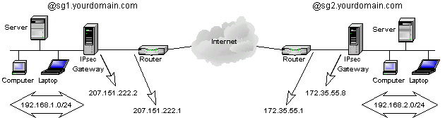
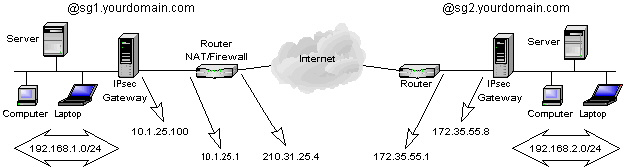
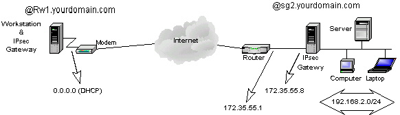
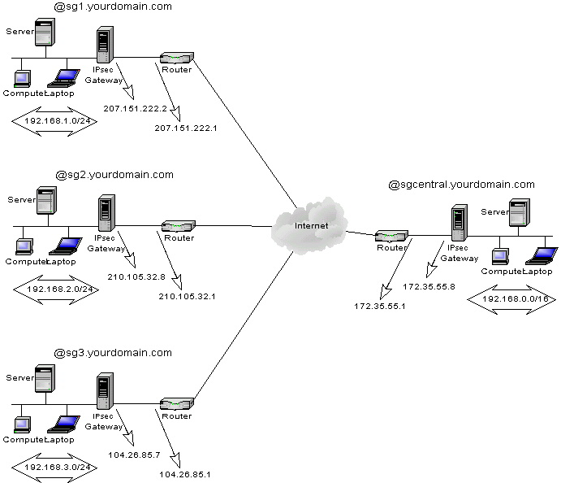

|
Ipsec practical configurations for Linux Freeswan 1.x. Jean-Francois Nadeau. 2001/05/09 |
News 2001/05/09:
I was at a LINUQ meeting tonight, a great Linux group in Quebec city promoting free software and Linux. They gave me the opportunity to introduce FreeSwan and VPNs to their members. My presentation (html) is available in french here. You can find the LINUQ group homepage here.
Introduction :
This tutorial describes the configuration needed to setup Ipsec tunnels in various situations such as RoadWarriors and NATed/Firewall gateways.
This document assumes you have already installed Freeswan and knows a bit of the Ipsec/Freeswan terminology. You should read the Freeswan documentation before use of the present document.
My Ipsec gateways are :
Intel Pentium II 300 Mhz (much more than needed)
128 MB of RAM (32 MB is enough)
Redhat 6.0 (with minor updates such as the nettools, netkit and ipchains packages. )
Kernel 2.2.14 to 2.2.19.
Freeswan 1.5 to 1.9
I use 3DES-MD5 and ESP in all my configurations.
All configurations are done in tunnel mode.
I use most default values for rekeying, exept for RoadWarriors.
The RoadWarrior always initiates the negociation and authentification of the tunnels.
***
All
The practical configurations covered are :
Simple subnet-to-subnet configuration (RSA).
Subnet-to-subnet configuration with a NATed gateway (RSA).
RoadWarrior configuration : Freeswan-to-Freeswan (RSA).
RoadWarrior configuration : NAI's PGPnet-to-Freeswan (PSK).
RoadWarrior configuration : IRE's Safenet SoftPK-to-Freeswan (PSK).
Using a central Ipsec gateway as a "tunnel hub".
Expanding NT domain logon validation and network browsing through IPSec tunnels.
Subnet-to-Subnet : Win2000-to-Freeswan (PSK).
Simple Subnet-to-Subnet configuration.
This
is the simplest case and easiest to setup. We have 2 LANs that we
want to link together through the Internet. Each LAN is connected to
the internet via router or firewall with static

Both Ipsec gateways will have the same ipsec.conf configuration file.
|
ipsec.conf |
ipsec.secrets* |
|---|---|
|
config setup interfaces="ipsec0=eth0" klipsdebug=none plutodebug=none plutoload=%search plutostart=%search
conn %default keyingtries=0
conn site1-site2 left=207.151.222.2 leftsubnet=192.168.1.0/24 leftnexthop=207.151.222.1 right=172.35.55.8 rightsubnet=192.168.2.0/24 rightnexthop=172.35.55.1 auto=start authby=rsasig leftid=@sg1.yourdomain.com rightid=@sg2.yourdomain.com leftrsasigkey=0x--left-public-key rightrsasigkey=0x--right-public-key |
: rsa { # 256 bits, Thu Apr 13 00:29:47 2000 # for signatures only, UNSAFE FOR ENCRYPTION #pubkey=0x01035c3c464da4fb8c9a61fb8c798d91a5 Modulus: 0x5c3c464da4fb8c9a61fb8c798d91a5d5946 PublicExponent: 0x03 # everything after this point is secret PrivateExponent:0x3d7d525dbc41525da65e61193848 Prime1: 0x9c9e5f3bd5d345020052560b8a2a0bd4dd9 Prime2: 0x96c34af8e1d95fc3454551fc29f15a4c69b79 Exponent1: 0x686994d28e8ac0036e407b1715d3893b Exponent2: 0x648231fb413b952e5152c6a0e6dd9bcfb Coefficient: 0x05ac43c3b6a5d192f392c521b98334d6 } |
*Not truly valid, you should create a RSA signature of at least 1024 bits on each gateway. And be carefull with the necessary whites spaces. On each gateway :
|
/usr/local/lib/ipsec/ipsec rsasigkey 1024 >> mykey |
Then paste the key in /etc/ipsec.secrets. Finally, paste the value from the field #pubkey into the coresponding rsasigkey parameter in the ipsec.conf file.
Restart the ipsec service on both gateways and observe the logs for any errors.
This configuration assumes that both Ipsec gateways use the interface eth0 to reach the internet. Most default values were used here for simplicity.
Both
gateways must have
Remember that Ipsec is as secure as your gateways are. I recommend to only accept Ipsec traffic on the interface visible to Internet. On the left gateway :
|
# Default policies /sbin/ipchains -P input ACCEPT /sbin/ipchains -P forward DENY # Only allow ipsec traffic, ESP and AH from and to the Internet /sbin/ipchains -A input -p UDP -d 207.151.222.2/32 500 -j ACCEPT /sbin/ipchains -A input -p 50 -d 207.151.222.2/32 -j ACCEPT /sbin/ipchains -A input -p 51 -d 207.151.222.2/32 -j ACCEPT # Allows internal subnet access /sbin/ipchains -A input -s 192.168.1.0/24 -j ACCEPT # Allows traffic from and to internal LANs /sbin/ipchains -A forward -b -s 192.168.1.0/24 -d 192.168.2.0/24 -j ACCEPT # Default input policy back to deny /sbin/ipchains -P input DENY |
Disable any unused services (inetd.conf) and protect the remaining services called from inetd (hosts.allow and hosts.deny). Do not run daemons that should not resides on a security gate. I.e DNS, Sendmail and such services with a big security history. I often run SSH on those gateways, its the only backdoor if your tunnel stops working. If using SSH here horrifies you, use a good internal PPP access with callback support... just in case.
That's it for the simple subnet-to-subnet case. The tricky ones coming...
Subnet-to-Subnet configuration with a NATed gateway.
This
is the first tricky configuration as one of the gateways is behind a
router/firewall doing Network Address Translation (

The difference is that the left gateway is no longer being exposed directly to the Internet. The trick here is to have 2 different configuration files :
|
Left gateway's ipsec.conf |
Right gateway's ipsec.conf |
|---|---|
|
config setup interfaces=%defaultroute klipsdebug=none plutodebug=none plutoload=%search plutostart=%search
conn %default keyingtries=0
conn site1-site2 left=%defaulroute leftsubnet=192.168.1.0/24 leftnexthop= right=172.35.55.8 rightsubnet=192.168.2.0/24 rightnexthop=172.35.55.1 auto=start authby=rsasig leftid=@sg1.yourdomain.com rightid=@sg2.yourdomain.com leftrsasigkey=0x--left-public-key rightrsasigkey=0x--right-public-key |
config setup interfaces=%defaultroute klipsdebug=none plutodebug=none plutoload=%search plutostart=%search
conn %default keyingtries=0
conn site1-site2 left=210.31.25.4 leftsubnet=192.168.1.0/24 leftnexthop=210.31.25.1 right=%defaultroute rightsubnet=192.168.2.0/24 rightnexthop= auto=start authby=rsasig leftid=@sg1.yourdomain.com rightid=@sg2.yourdomain.com leftrsasigkey=0x--left-public-key rightrsasigkey=0x--right-public-key |
The
right gateway only have to see left as its external NATed address.
This work because authentication is based on @sgx.yourdomain.com, not
on a real
Proceed the same way as the simple subnet-to-subnet configuration for your ipsec.secrets files.
The
Altough I did not had the chance to test it, this could work even if both gateways are NATed, if you adjust the configuration.
RoadWarrior Configuration : Freeswan-To-Freeswan.
This setup is usefull for moving users with laptop to connect to a central network using Ipsec.
As most of the time they will be using a modem over an async connection to the ISP, my example describes that case.

The
difficulties of this configuration origins from the fact that the
initiator of the tunnel
|
Left gateway's ipsec.conf |
Right gateway's ipsec.conf |
|---|---|
|
config setup interfaces=%defaultroute klipsdebug=none plutodebug=none plutoload=%search plutostart=%search
conn %default keyingtries=1
conn Road-Central left=%defaultroute leftsubnet= leftnexthop= right=172.35.55.8 rightsubnet=192.168.2.0/24 rightnexthop=172.35.55.1 auto=start authby=rsasig leftid=@rw1.yourdomain.com rightid=@sg2.yourdomain.com leftrsasigkey=0x--left-public-key rightrsasigkey=0x--right-public-key |
config setup interfaces="ipsec0=eth0" klipsdebug=none plutodebug=none plutoload=%search plutostart=%search
conn %default keyingtries=1
conn Road-Central left=0.0.0.0 leftsubnet= leftnexthop= right=172.35.55.8 rightsubnet=192.168.2.0/24 rightnexthop=172.35.55.1 auto=add authby=rsasig leftid=@rw1.yourdomain.com rightid=@sg2.yourdomain.com leftrsasigkey=0x--left-public-key rightrsasigkey=0x--right-public-key |
This setup works well with RSA authentication, and can work with PSK if you update ipsec.secrets automaticly on the RoadWarrior (had a script to do that).
To bring the ipsec tunnel up as I connect to the internet, I usually remove Ipsec from start-up :
|
/sbin/chkconfig --del ipsec |
And
bring the ipsec service up and down with my PPP interface through
You can NOT have both RSA and PSK RoadWarriors as of Freeswan 1.3.
Some tips about routing & RoadWarriors :
If your gateway is also a masquerading gateway to the Internet, you should use the rightfirewall parameter in ipsec.conf and adapt the _updown script to ipchains (or anything used to control your firewall chains).
The nodes on the protected subnet must use the ipsec gateway as their default gateway. Remember that the packets also needs to come back from your LAN to the RoadWarriors !
RoadWarrior configuration : NAI's PGPnet-to-Freeswan
Using Windows clients to access Freeswan is for me the key to integration of IPSec and the desktop. NAI's PGPnet is great for that task . It is pretty stable and transparent for the user. Remember that only the commercial copy of PGPnet can do tunnels as I will show in this example :
Here's the steps needed to setup PGPnet on the Win32 client (letfgateway) for that configuration (refer to NAI's documentation for installation) :
|
Steps |
How to do it |
|---|---|
|
Set up the adapter connected to the internet. |
Start - Program - PGP - Set Adapter Select the network adapter connected to the internet |
|
Launch the PGPnet configuration tool and set defaults options |
Start - Program - PGP - PGPnet View - Options General Panel : Expert Mode Allow communications with unconfigured hosts Require valid authentication key Cache passphrases between logins *IKE Duration : 6h *IPsec : 6h Advanced panel : Selected options : Ciphers : Tripple DES Hashes : MD5 Diffie-Hellman : 1024 and 1536 Compression : LZS and Deflate Make the IKE proposal : Shared-Key - MD5 - 3DES -1024 bits on top of the list Make the IPSec proposal : NONE - MD5-TrippleDES -NONE on top of the list Select Perfect Forward Secrecy = 1024 bits Press OK |
|
Create the connection's definition. |
In the Hosts panel, ADD Name : Enter a name for the right gateway IPaddress
: Enter its Select Secure Gateway Set shared Paraphrase : enter you preshared key Identity
type : select Identity : enter 0.0.0.0 Remote Authentication : select Any valid key Press Ok Select the newly created entry for the right gateway and click ADD, YES Name : Enter a name for the central subnet Select Insecure Subnet Subnet Mask : enter its subnetmask (255.255.255.0) Press OK, YES, YES |
|
Test it |
Ping 192.168.2.1 |
*I choosed to rekey faster that Freeswan to solve a common rekeying problem with Win32 Ipsec clients.
Some Screenshots of that configuration.
Ipsec.conf and ipsec.secrets on right gateway :
|
ipsec.conf |
Ipsec.secrets |
|
config setup interfaces="ipsec0=eth0" klipsdebug=none plutodebug=none plutoload=%search plutostart=%search
conn %default keyingtries=1
conn rw_pgp-site2 left=0.0.0.0 leftsubnet= leftnexthop= right=172.35.55.8 rightsubnet=192.168.2.0/24 rightnexthop=172.35.55.1 authby=secret auto=add |
0.0.0.0 172.35.55.8 "mypresharedkey" |
All your RoadWarriors will have to share the same PreShared Key.
See my tips about routing and RoadWarriors.
RoadWarrior Configuration : IRE's SafeNet/SoftPK-to- Freeswan
Using the same example as for PGPnet :
IRE's SafeNet/SoftPK (3DES) is a much lighter software to do Ipsec tunnels but does not integrates PGP in emails and local encryption. If your only goal is to do some Ipsec tunnels on a Win32 desktop, SafeNet is the good choice as it is cheaper than NAI's PGPnet.
Its configuration is not complex and works in most cases (exept with ADSL as it does not support a PPPoe interface).
Lets do the Safenet's setup on the Win32 desktop (left gateway) for the configuration above :
|
Steps |
How to do it |
|---|---|
|
Launch the Safenet Security Editor and create a new Security Policy. |
Start - Program - Safenet Soft-PK - Security Policy Editor File - New Connection Enter a name for the connection |
|
Set the connection's parameters |
Select the newly created connection : Connection Security : Secure Remote
Party Identity and Adressing : Select Enter the rightsubnet (192.168.2.0) Enter its netmask (255.255.255.0) Protocol : ALL Select Connect using Secure Gateway Tunnnel ID
Type : Select Enter
right gateway
Expand the properties of the connection (left pane): Select the Identity branch. Select Certificate = none ID
Type : Select Port : Select ALL Local Network Interface : Select the interface used to reach the internet. Click on Pre-Shared Key and enter your pre-shared key.
Select the Security Policy branch Phase 1 negociation mode : Main Mode Select Enable Perfect Forward Secrecy PFS Key Group : Diffie-Hellman Group 2 Select Enable Replay Protection.
Expand the properties of the Security Policy (left pane) : Expand the properties of Authentication Select the Proposal 1 branch Authentication Method : Pre-shared Key Encrypt Alg : Tripple DES Hash Alg : MD5 SA Life : Seconds - 18000 Key Group : Diffie-Hellman Group 1 (Safenet 1.x) Diffie-Hellman Group 2 (Safenet 2.x)
Expand the properties of Key Exchange Select the Proposal 1 branch Select Encapsulation Protocol (ESP) Encrypt Alg : Tripple DES Hash Alg : MD5 SA Life : Seconds - 18000
File - Save Changes |
|
Test it. |
Ping 192.168.2.1 |
All your RoadWarriors will have to share the same PreShared Key.
The right gateway's configuration (Freeswan) will be the same as the previous example.
As I said earlier, the troubleshooting is a lot easier checking the logs on the responder (right gateway). Most of the problems origins from configuration errors and typos like different netmasks entered on each side.
See my tips about routing and RoadWarriors.
Using a central Ipsec gateway as a "tunnel hub"
If you got multiples subnets connected to a central one, lets say a few remote locations connected to your headquarters, you might want to connect them all using Ipsec to permit communications between those remotes locations. You could create a mesh, i.e a connection from one locations to each others on all your gateways. If you got only 2 or 3 remote locations, this will work. But as you add more and more locations, it is gonna be a pain to administer as you will have to update all your ipsec gateways each time you add another tunnel. If you got 10 or more locations, this could become impossible to maintain ( 10*10 = 100 tunnels !).
Using one central location as a "tunnel hub" simplifies connecting all those subnets together, as only one tunnel is added for a new location. There are 3 drawbacks to that solution :
If the central gateway dies, all your tunnels stops working.
You will need more bandwith at central gateway's site, as all ipsec tunnels will be routed through it.
You will need more processing power on that central gateway, as packets going between 2 remote locations will be encrypted twice.
That configuration might look like this :

The remote locations are on the left side and the headquarters on the right.
We want the subnets 192.168.1.0/24, 192.168.2.0/24 and 192.168.3.0/24 to communicate with each others and with the central network 192.168.0.0/24.
The trick to make this work is on the graphic... all remote locations are on a C class network just as the central location. But each SA are for a longer netmask at the central site. Each remote location will create a tunnel from their subnet to the central subnet 192.168.0.0/16. But the central subnet is a 192.168.0.0/24 network.When this is done, the central Ipsec gateway will have an eroute for each remote network. When someone on a remote location wants to talk to another remote location, lets say 192.168.1.8 to 192.168.2.16, it thinks the destination is on the central network, but the central Ipsec gateway have a specific eroute for the 192.168.2.0/24 network, so it routes the packet through the good tunnel for that remote location.
Networks :
Central subnet : 192.168.0.0 255.255.255.0
Remote location 1 : 192.168.1.0 255.255.255.0
Remote location 2 : 192.168.2.0 255.255.255.0
Remote location 3 : 192.168.3.0 255.255.255.0
Ipsec tunnels :
192.168.1.0/24 --> 192.168.0.0/16 for remote location 1
192.168.2.0/24 --> 192.168.0.0/16 for remote location 2
192.168.3.0/24 --> 192.168.0.0/16 for remote location 3
The configuration is the same as the Simple subnet-to-subnet case, just remember the network mask trick and everything should work.
You can control wich remote locations can talk to another by adjusting your forwarding rules with ipchains on the central ipsec gateway.
Subnet-to-Subnet configuration : Win2000-to-Freeswan (PSK).
This is the most complex configuration, because of microsoft's strange way to represent a connection and its parameters. This section is far from being complete, as I did not find any simple way to explain this in details yet without making you get crazy through all the menus and options, I will at first try to explain Microsoft's logic of a tunnel mode connection.
We can use the simple subnet-to-subnet case as a model :
A
connection in Microsoft's terminology is a Security Policy. An Ipsec
Security Policy is configurable through an MMC console with the
When
you create a new
One rule for the traffic going from the leftsubnet to the rightsubnet.
One rule for the traffic going from the rightsubnet to the leftsubnet.
A rule defines a :
Filter Action. Describing the action to take when the filter applies (Require Security).
Authentication Method. Desribing the authentication mode (PresharedKey).
Endpoints . Describing the Ipsec gateway to reach (leftgateway or rightgateay).
Ipsec/IKE proposals, rekeying settings and PFS are defined inside the Filter Action.
This logic can be very confusing, as you can go from properties menus inside properties menus.
Ouch !
The generics steps I recommend to make this setup work are :
Create
a new MMC console and add the
Create a new security policy.
Create a rule for the traffic from left-to-right.
Edit
that rule and create a
Specify
to Require Security on that
Edit that Filter Action, enable Perfect Forward Secrecy, and make the Ipsec proposal 3DES-MD5 on top of the list.
Specify
the enpoint to be the right gateway's
Enter your preshared key.
Create a rule for the traffic from right-to-left.
Edit
that rule and create a
Specify
to Require Security on that
Edit that Filter Action, enable Perfect Forward Secrecy, and make the Ipsec proposal 3DES-MD5 on top of the list.
Specify
the enpoint to be the letf gateway's
Enter your preshared key.
Save your changes
Select you Security Policy, and Assign it through the Action Menu.
Test it :
Ping
a host on the other subnet, it should say at first "Negociating
Ping it again to see if it works.
Check the EventViewer for any errors.
Check the logs on the Freeswan gateway for any errors.
Run the ipsecmon program to see the connection status.
The longest SCREENSHOTS you've never seen to setup the previous example. 900 KB...you've been warned ;).
HINTS & LIMITATIONS :
Configure the Freeswan gateway just like you would be creating a Freeswan-to-Freeswan tunnel using PSK for authentication.
Be sure to install the Microsoft Encryption Pack for Win2000 before trying anything. It adds 3DES support to the OS, so don't even think something will work without it !
If you modify a Security Policy after it has been assigned, you must restart the Ipsec service (or wait the default 240 minutes of the Ipsec service to read its configuration again)..
A RoadWarrior
configuration is difficult to do here. Because Win2k does not let
you enter 0.0.0.0 as your endpoint. Altough a client to subnet
configuration works, the Win2k client needs a static
I will need feedbacks to make this section clear, so don't hesitate to send me some comments !
Sign My Guestbook View My Guestbook